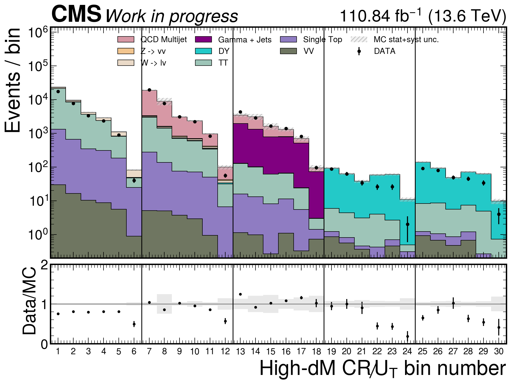
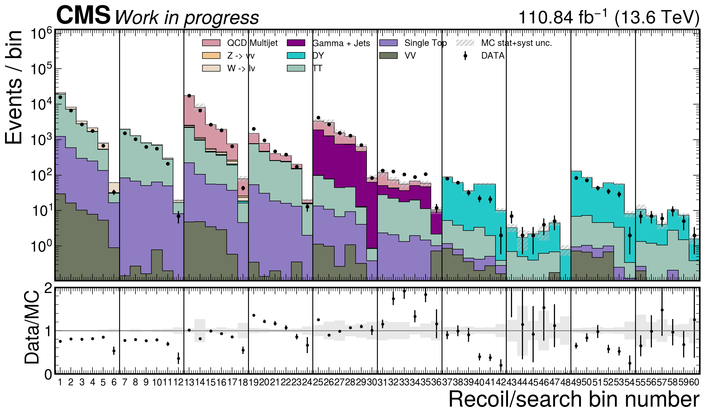
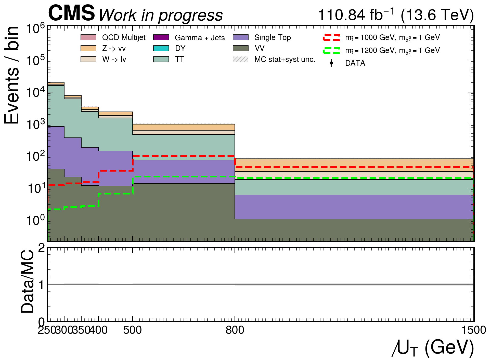
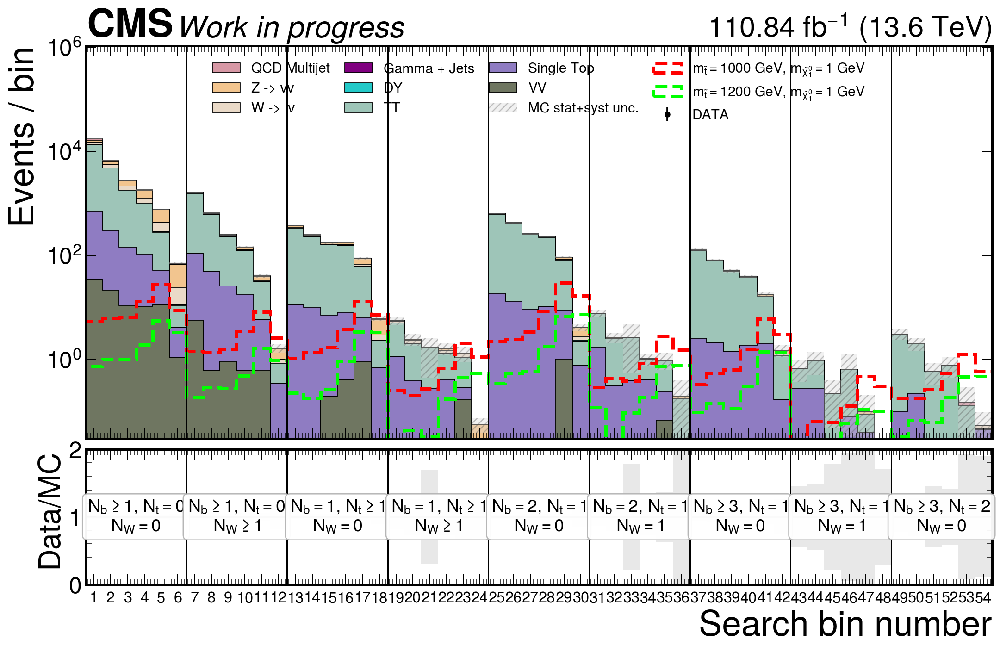
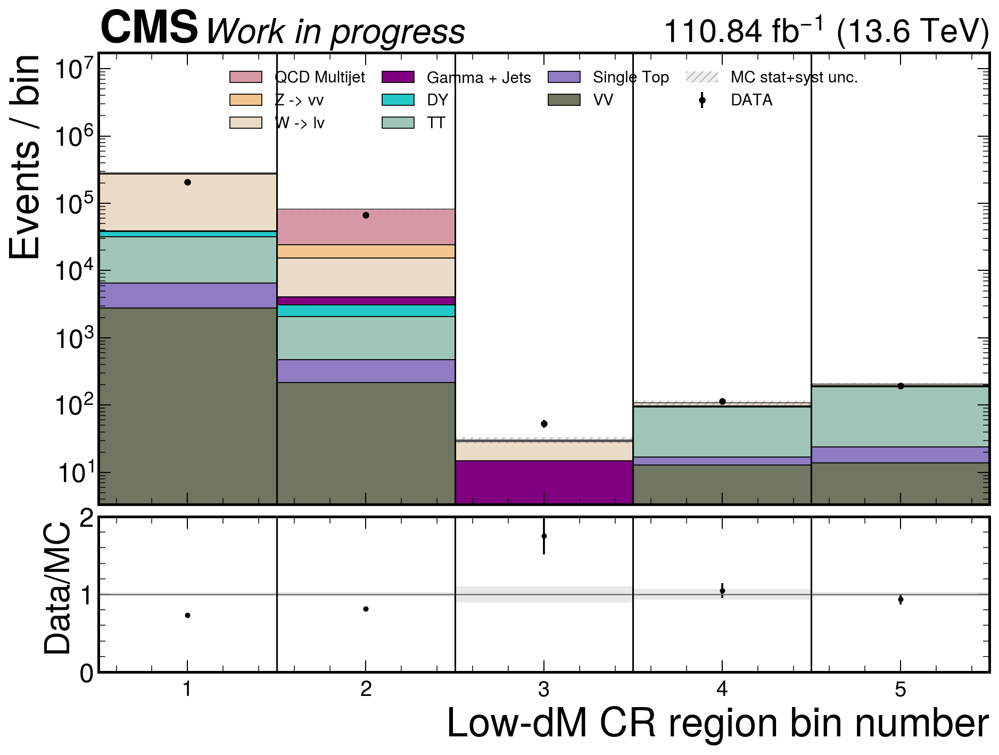
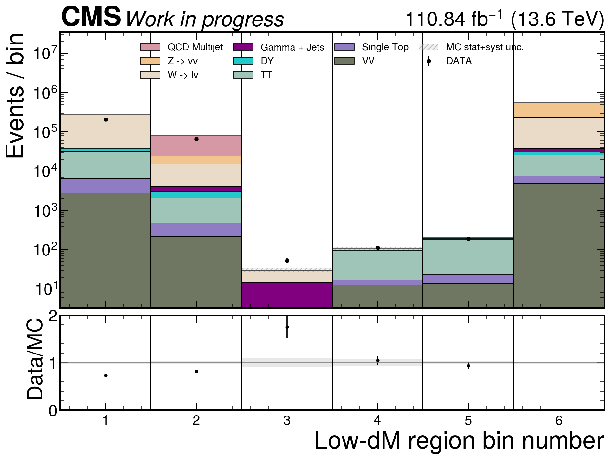
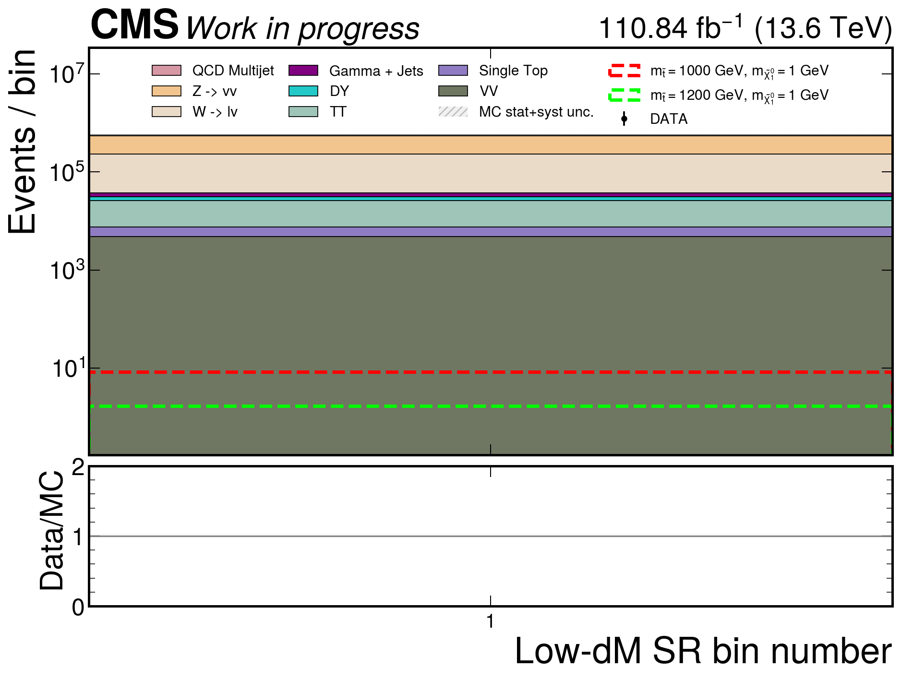
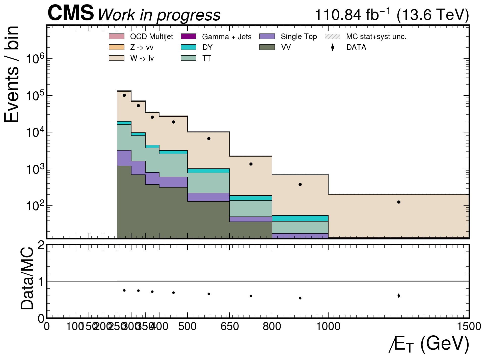
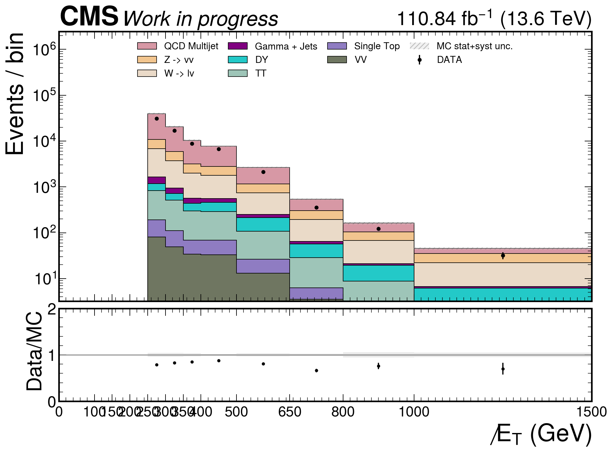
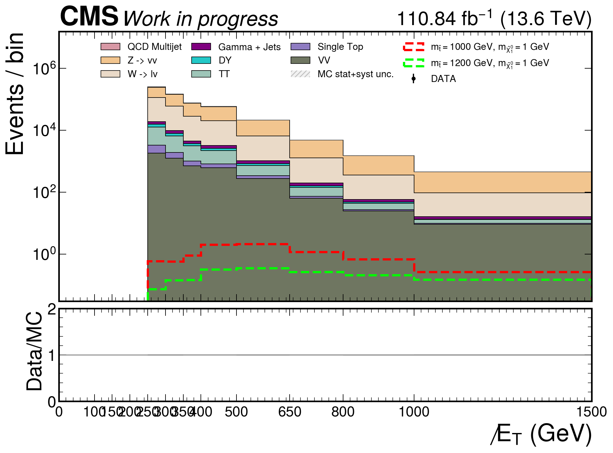

7,5872025 intermediate ROOT files
9,685,947selected 2025 events
54high-dM search bins
352/352valid 2025 limit ROOTs
352/352valid combined limit ROOTs
1,400 GeVcombined max excluded mStop, mLSP <= 100 GeV
Expected Limits
Combine v10.0.1, AsymptoticLimits, blind expected. 빨강 실선과 점선은 Run-3 median expected와 ±1σ expected contour, 검정 실선과 점선은 Run-2 SUS-19-010 observed와 expected contour입니다.
2025 expected-excluded grid points: 70, low-LSP 최대 expected-excluded mStop: 1350 GeV. 2024+2025 결합 expected-excluded grid points: 87, low-LSP 최대: 1400 GeV. 관심 구간 공통 157점의 median
r_combined/r_2025=0.683.Pipeline Status
| 2025 intermediate ROOT | complete · 7,587 files · 9,685,947 selected events |
|---|---|
| Local recovery | complete · 5 shards · 0 lost selected events · 0 permanently skipped |
| Histograms | complete · 54 high-dM bins · 9 categories × 6 recoil bins |
| b-tag systematics | complete · 4 nuisance sources · 8 Up/Down shape variations |
| Analysis plots | complete · 130 records · 10 published on this page |
| 2025 limits | complete · 352 datacards · 352 valid · 0 missing · 0 invalid |
| 2024+2025 limits | complete · 14 year-labelled channels · 352 valid · 0 missing · 0 invalid |
Machine Outputs
run summary · 54-bin definition · ROOT recovery · 2025 limits · combined limits · limit comparison · plot manifest
Selected Analysis Plots

highdm_cr_recoil_inclusive
highdm_cr_recoil_ntop_split
highdm_sr_recoil_inclusive
highdm_sr_selected_recoil54_nt0_wsplit_bins
lowdm_cr_onebin
lowdm_cr_sr_onebin
lowdm_sr_onebin
lowdm_cr_llcr_met
lowdm_cr_qcdcr_met
lowdm_sr_sr_metExecution Policy
산출물과 런타임 디렉터리는 EOS만 사용했습니다. AFS와 시스템
/tmp에는 쓰지 않았고 decaf/analysis는 수정하지 않았습니다. 플롯은 기존 plotting code와 기존 캔버스 크기를 유지했습니다. 이 페이지는 기본 사이트와 분리된 독립 페이지입니다.Generated 2026-07-15T11:30:16.391085+00:00 from machine-readable outputs.